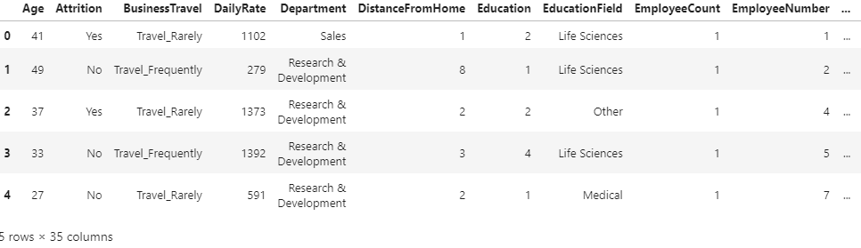
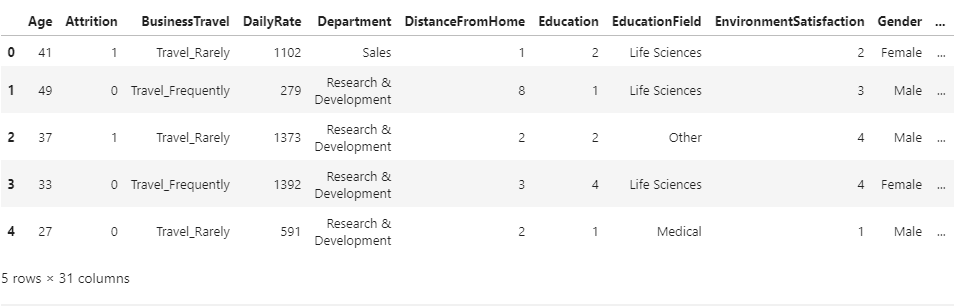

We will now fit the same titanic dataset (from the previous lesson) using random forest classifier. This model uses an ensemble of decision trees to learn. We can set the number of decision trees (n_estimators) and the depth of the tree (max_depth) among other options.
We use a value of n_estimators=300, max_depth=3, and see that it outperforms decision trees. You can change these values and observe how it affects model accuracy.
import pandas as pd
df=pd.read_csv("data/HR-Employee-Attrition.csv")
df.head()Output:

import seaborn as sns
sns.countplot(x='Attrition', data=df)Outout:

df.drop(['EmployeeCount', 'EmployeeNumber', 'Over18', 'StandardHours'], axis="columns", inplace=True)
categorical_col = []
for column in df.columns:
if df[column].dtype == object and len(df[column].unique()) <= 50:
categorical_col.append(column)
df['Attrition'] = df.Attrition.astype("category").cat.codesOutput:

from sklearn.model_selection import train_test_split
X = df.drop('Attrition', axis=1)
y = df.Attrition
X_train, X_test, y_train, y_test = train_test_split(X, y, test_size=0.3, random_state=42)